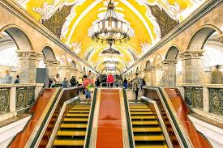
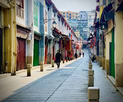
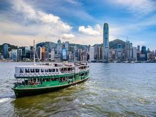
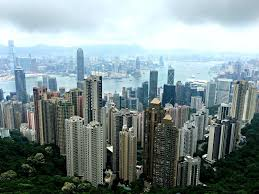

Moscow: Where Tradition Meets Modernity
Things to See and Do
Historic Center
Red Square & Kremlin - The heart of Moscow and Russia itself. Visit early morning to avoid crowds and catch the changing of the guards. The Kremlin complex houses multiple cathedrals and museums, with the Armoury Chamber being a must-see for its royal treasures. St. Basil's Cathedral is best photographed at sunrise or sunset when the lighting enhances its colorful domes.
GUM Department Store - More than just shopping, this historic arcade represents the grandeur of pre-revolutionary Russian architecture. Visit in the evening when the glass-roofed galleries are beautifully illuminated. Don't miss the famous GUM ice cream, served in the same style since Soviet times.


Cultural Experiences
Moscow Metro - A museum in itself, the metro system showcases some of the finest Soviet-era art and architecture. Key stations include Komsomolskaya with its baroque ceiling, Mayakovskaya's art deco style, and Ploshchad Revolyutsii with its bronze sculptures. Take a guided tour during off-peak hours for the best experience.
Tretyakov Gallery - Home to the world's finest collection of Russian art. Start with the medieval icons and work your way through centuries of Russian artistic development. The new Tretyakov features important 20th-century works, including Soviet-era art.
When to Go
Seasonal Guide
Fall (September-November) - Temperature ranges from 15-25°C (59-77°F). Highlights include autumn foliage in Casa de Campo, wine harvest events. Advantages: Pleasant temperatures, fewer tourist crowds, cultural events. Considerations: Evenings can be cool.
Spring (March-May) - Temperature ranges from 12-23°C (54-72°F). Highlights include roses in Retiro Park. Advantages: Perfect temperatures, cultural events. Considerations: Peak tourism season.
Summer (June-August) - Temperature ranges from 25-35°C (77-95°F). Highlights: Veranos de la Villa festival, outdoor cinema events. Advantages: Vibrant nightlife, extended museum hours, outdoor dining. Considerations: Afternoon heat can be intense, many locals leave in August.
Winter (December-February) - Temperature ranges from 5-12°C (41-54°F). Highlights: Christmas markets, Three Kings Parade, New Year's celebrations. Advantages: Fewer tourists, lower prices, cozy tavern atmosphere. Considerations: Some attractions may have reduced hours.
❤️ 2.3K Likes
💬 156 Comments
Macau: The East-West Fusion Paradise
Things to See and Do
Historic Center
Senado Square & Historic District - Begin your exploration at this UNESCO World Heritage site. The wave-patterned mosaic pavement leads you through the heart of old Macau. Visit early morning to photograph the colonial architecture without crowds. The square comes alive in the evening with street performances and local gatherings.
Ruins of St. Paul's - Macau's most iconic landmark is best visited late afternoon when the lighting is perfect for photos. Climb to the top for city views and visit the Museum of Sacred Art in the crypt. The surrounding streets are filled with traditional snack shops selling almond cookies and pork jerky.


Cultural Fusion
A-Ma Temple - The oldest temple in Macau, predating the Portuguese arrival. Visit in the morning to see locals making offerings and fortune telling rituals. The temple complex climbs up the hillside with different pavilions dedicated to various deities. The smoke from incense creates an atmospheric experience.
Taipa Village - A perfect example of Macau's cultural fusion. Wander through narrow lanes lined with Portuguese-style houses in pastel colors. Sample Macanese cuisine, a unique blend of Portuguese and Chinese flavors. Don't miss Lord Stow's Bakery for the original Macau egg tarts.
When to Go
Seasonal Guide
Fall (September-November) - Temperature ranges from 15-25°C (59-77°F). Highlights include autumn foliage in Casa de Campo, wine harvest events. Advantages: Pleasant temperatures, fewer tourist crowds, cultural events. Considerations: Evenings can be cool.
Spring (March-May) - Temperature ranges from 12-23°C (54-72°F). Highlights include roses in Retiro Park. Advantages: Perfect temperatures, cultural events. Considerations: Peak tourism season.
Summer (June-August) - Temperature ranges from 25-35°C (77-95°F). Highlights: Veranos de la Villa festival, outdoor cinema events. Advantages: Vibrant nightlife, extended museum hours, outdoor dining. Considerations: Afternoon heat can be intense, many locals leave in August.
Winter (December-February) - Temperature ranges from 5-12°C (41-54°F). Highlights: Christmas markets, Three Kings Parade, New Year's celebrations. Advantages: Fewer tourists, lower prices, cozy tavern atmosphere. Considerations: Some attractions may have reduced hours.
❤️ 1.9K Likes
💬 132 Comments
Hong Kong: A Symphony of Sky and Sea
Things to See and Do
Hong Kong Island
Victoria Peak - Best visited at sunset for day-to-night transition. Take Peak Tram up, walk down through the gardens. Book online tickets to avoid long queues. Pro tip: Visit Sky Terrace 428 for 360° views. For an alternative view, take the Lugard Road walking trail around the peak.
Central District - Ride the historic Mid-Levels escalators (world's longest) and explore the area's highlights. Visit Tai Kwun, a former police station turned cultural center, and PMQ, a creative hub in former police married quarters. Don't miss the atmospheric Man Mo Temple from the 1800s. End your day in the SOHO area for excellent dining and nightlife options.
Kowloon Highlights
Tsim Sha Tsui - Start at the Promenade for the Symphony of Lights show (8 PM daily). Take the iconic Star Ferry across the harbor, then explore Kowloon Park with its flamingos and Chinese gardens. Culture enthusiasts will enjoy the cluster of museums: History, Science, and Space. For shopping, explore Nathan Road and Harbour City.
Markets & Street Life - Immerse yourself in local culture at the Ladies' Market for bargain shopping and souvenirs. As night falls, explore Temple Street Night Market for street food and fortune tellers. The Flower Market and Bird Garden offer unique local experiences, while Sham Shui Po reveals authentic local life and electronics shopping.


Local Experiences
Food Adventures - For authentic dim sum, visit Lin Heung Tea House or Maxim's Palace. Experience street food at the Dai Pai Dongs in Central. Try the affordable Michelin-starred Tim Ho Wan, and don't miss the classic Cha Chaan Teng experience at Australia Dairy Company or Lan Fong Yuen.
Islands & Nature - Take a day trip to Lantau to see the Big Buddha, Po Lin Monastery, and the traditional Tai O fishing village. Lamma Island offers excellent hiking trails and seafood restaurants. For the best urban hike, tackle the Dragon's Back Trail. Visit Wong Tai Sin Temple for a glimpse into local traditions and fortune telling.
When to Go
Seasonal Guide
Fall (September-November) - Temperature ranges from 15-25°C (59-77°F). Highlights include autumn foliage in Casa de Campo, wine harvest events. Advantages: Pleasant temperatures, fewer tourist crowds, cultural events. Considerations: Evenings can be cool.
Spring (March-May) - Temperature ranges from 12-23°C (54-72°F). Highlights include roses in Retiro Park. Advantages: Perfect temperatures, cultural events. Considerations: Peak tourism season.
Summer (June-August) - Temperature ranges from 25-35°C (77-95°F). Highlights: Veranos de la Villa festival, outdoor cinema events. Advantages: Vibrant nightlife, extended museum hours, outdoor dining. Considerations: Afternoon heat can be intense, many locals leave in August.
Winter (December-February) - Temperature ranges from 5-12°C (41-54°F). Highlights: Christmas markets, Three Kings Parade, New Year's celebrations. Advantages: Fewer tourists, lower prices, cozy tavern atmosphere. Considerations: Some attractions may have reduced hours.
Travel Tips
Get an Octopus Card immediately upon arrival for convenient travel. The MTR runs from 6 AM to 1 AM, and the Airport Express offers free hotel shuttles. Avoid taxis during rush hour for better efficiency and cost savings.
❤️ 2.4K Likes
💬 167 Comments